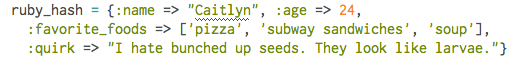

While there are many similarities between JavaScript and Ruby, there are also a many differences. One in particular, is the idea of hashes in Ruby and it's somewhat functionally equivalent JavaScript counterpart, the object literal.
In Ruby, hashes are unstructured arrays. Instead of having a set order of items, hashes organize items using keys as references to the value they hold. For more on this, refer to this post.
Example of a hash in Ruby

While JavaScript also has arrays to store items in an ordered list, it doesn't have hashes with key-value pairs like Ruby. However, it has objects (or object literals) that are functionally, and structurally similar.
Example of an object in JavaScript
The MDN JavaScript Guide defines "an object literal [as] a list of zero or more pairs of property names and associated values of an object, enclosed in curly braces." As such, it is very similar to how hashes function in Ruby and syntactically it even looks similar.
However is is important to note that in Ruby the keys can be any data type: string, symbol, array, another hash, etc. In JavaScript, this isn't so. Strings, numbers, and variables are acceptable properties in a JS object but with regards to using variables, there are some restrictions. Variables must conform to the same requirements as other variables in JavaScript (although properties can still point to any data type value, including functions) and if it isn't a valid variable, it must be used inside quotes.
To access items in a Ruby hash, you would use bracket notation:
ruby_hash[:name]
To access items in a JS object, you can use bracket (with quotes) or dot notation.
js_Object['name']
js_Object.age
Another difference is that JS objects can store functions as property values and it is this ability that allows you to create JS methods (functions associated with a particular object). Whereas Ruby can only take values and variables. It is this characteristic that make JS objects different from hashes but similar to creating a class in Ruby.
In all, Ruby hashes and JavaScript objects are functionally and syntactically similar. The differences lie in the restrictions placed on what makes a key/value in Ruby hashes and those placed on properties/values in JS objects as well as the different ways of accessing the information using bracket and/or dot notation.